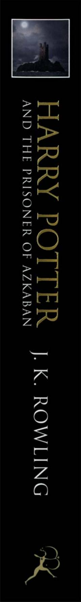

HPGarri Potter va uning Xogvartsdagi uchinchi yili hamda qochqin mahbus siri.
Garri Potter Xogvarts sehrgarlik maktabidagi uchinchi yilida Azkaban qamoqxonasidan qochgan xavfli jinoyatchi Sirius Blek tahdidi ostida qoladi. U o'zini va maktabni himoya qilish uchun Dementorlar va qorong'u bashoratlarga qarshi kurashishga majbur bo'ladi. Bu asar sehrli olam sirlari va Garri o'tmishidagi yangi haqiqatlarni ochib beradi.